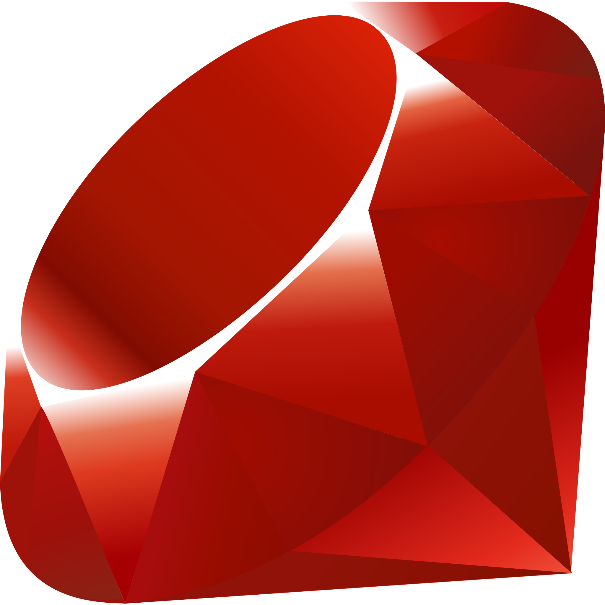

Shell
Year: 1971
Developer(s): Ken Thompson
Features: Interpreter for commands in operating systems.
More info about ShellC
Year: 1972
Developer(s): Dennis Ritchie
Features: General, influential programming language.
More info about CC++
Year: 1985
Developer(s): Bjarne Stroustrup
Features: Supports object-oriented programming.
More info about C++Python
Year: 1991
Developer(s): Guido van Rossum
Features: Simple, readable syntax used in various applications.
More info about PythonRuby
Year: 1995
Developer(s): Yukihiro Matsumoto
Features: Dynamic, object-oriented language for web development.
More info about RubyPHP
Year: 1995
Developer(s): Rasmus Lerdorf
Features: Mainly for server-side scripting in web development.
More info about PHPJavaScript
Year: 1995

Developer(s): Netscape Communications
Features: Dynamic, widely used language for web development.
More info about JavaScriptJava
Year: 1995
Developer(s): Sun Microsystems
Features: Platform-independent programming language.
More info about JavaC#
Year: 2000
Developer(s): Microsoft
Features: For Windows applications and .NET development.
More info about C#TypeScript
Year: 2012
Developer(s): Microsoft
Features: Superset of JavaScript, adds types.
More info about TypeScript